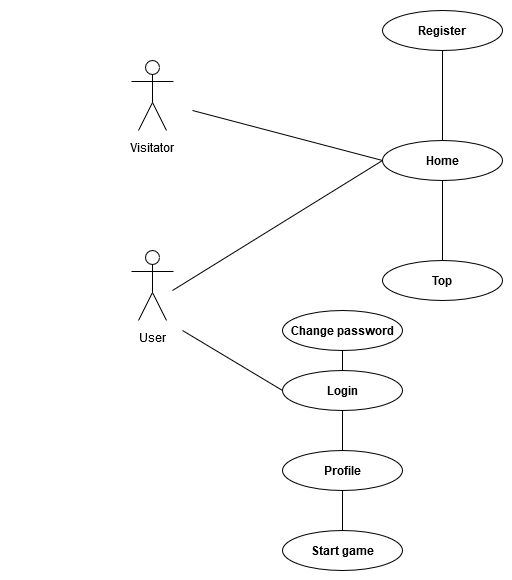
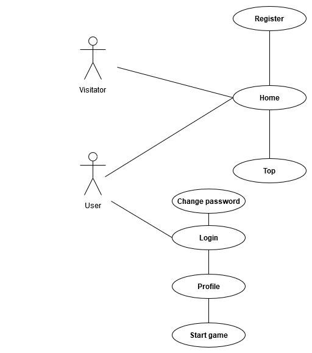

Guess the VIP
Cuprins
1.Descriere
2.Tehnologii si limbaje utilizate
3.Diagrama baza de date + diagrama use case
4.Atributii
5.Retrospectiva
6.Bibliografie
1. Descriere
2. Tehnologii si limbaje utilizate
3. Diagrame
Arhitectura bazei de date
 Diagrama use case

Diagrama use case

4. Atributii
| Nume |
Task |
| Burlacu Liviu |
Front end / Back End / Oracle DB / Coordonation |
| Leuciuc Nicolae |
Front end / Back End / Oracle DB / Raport |
5. Retrospectiva
| Nume |
Likes |
Dislikes |
| Burlacu Liviu |
Teamwork. |
Comunicare proasta. |
| Leuciuc Nicolae |
Am invatat limbaje noi de programare. |
Program aglomerat cu celelalte materii, timp putin. |
6. Bibliografie
-
Bellacera
Jake
.
PHP to ICS.
GitHub.
-
Saini
R.
K. ,
shubham
715. ,
White
Hat
.
Intrebari in legatura cu JSON si $ajax.
StackOverflow.
-
Imagini cu drept de reutilizare.
PixAbay.
-
Imagini cu drept de reutilizare.
Google images.